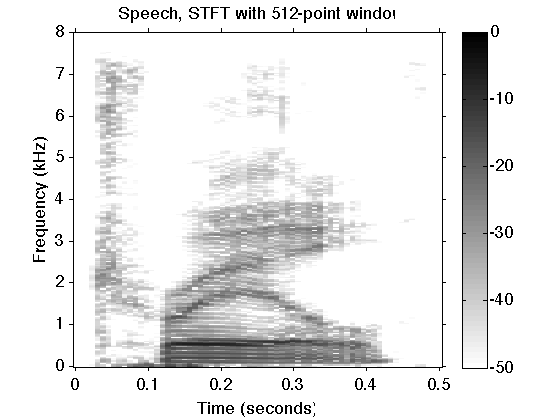

Example: Signal separation using dual basis pursuit (Example 2)
Decompose a speech waveform into two distinct signal components using short-time Fourier transforms (STFT) with short and long windows. The two components accentuate the pitch harmonics and the formants, respectively.
Ivan Selesnick NYU-Poly selesi@poly.edu 2011
Contents
Start
clear close all MyGraphPrefsON printme = @(filename) print('-deps', sprintf('figures/Example_dualBP_2_%s', filename) );
Load data
Load speech waveform data
[y, fs] = wavread('data/arctic_a0001.wav' ); % fs : sampling rate (samples/second) y = y(18000:26000); y = y(:)'; M = length(y); % M : length of signal m = (0:M-1)'; LW = 0.1; % LW : linewidth figure(1) clf subplot(2,1,1) plot(m/fs, y, 'black', 'linewidth', LW) xlim([0 M/fs]) ymax = max(abs(y)); ylim(1.2*[-ymax 1.2*ymax]) box off mytitle('Speech waveform'); xlabel('Time (seconds)') printme('speech')
Define transform 1
% A1 : STFT R1 = 32; A1T = @(x) pSTFT2(x, R1, 4, 3, R1); A1 = @(X) ipSTFT2(X, R1, 4, 3, M); p1 = 1; % Check perfect reconstruction property c1 = A1T(y); err = p1*y - A1(c1); re = max(abs(err(:))); fprintf('Transform 1 reconstruction error = %f\n', re) % Check Parseval energy identity E = sum(abs(y(:)).^2); E1 = sum(abs(c1(:)).^2); fprintf('Signal energy = %.3e\n', E) fprintf('Transform 1 energy = %.3e\n', E1/p1)
Transform 1 reconstruction error = 0.000000 Signal energy = 3.034e+01 Transform 1 energy = 3.034e+01
Define transform 2
% A2 : STFT R2 = 512; A2T = @(x) pSTFT2(x, R2, 4, 3, R2); A2 = @(X) ipSTFT2(X, R2, 4, 3, M); p2 = 1; % Check perfect reconstruction property c2 = A2T(y); err = p2*y - A2(c2); re = max(abs(err(:))); fprintf('Transform 2 reconstruction error = %f\n', re) % Check Parseval energy identity E = sum(abs(y(:)).^2); E2 = sum(abs(c2(:)).^2); fprintf('Signal energy = %.3e\n', E) fprintf('Transform 2 energy = %.3e\n', E2/p2)
Transform 2 reconstruction error = 0.000000 Signal energy = 3.034e+01 Transform 2 energy = 3.034e+01
Display spectrogram of speech signal
In the spectrogram, both the pitch harmonics (fine ridges) and the formatns (darker broad ridges) are clearly visible.
Y = pSTFT2(y, R2, 4, 3, R2); figure(1) clf dblim = [-50 0]; displaySTFT( Y, fs, M/fs, dblim) title(sprintf('Speech, STFT with %d-point window', R2)) orient portrait printme('STFT_y')
Peform signal separation using dual BP
Use the command 'dualBP' (dual basis pursuit) to separate the signal into two distinct components.
% Algorithm parameters theta = 0.5; % theta : trade-off parameter Nit = 200; % Nit : number of iterations mu1 = 10.0; % mu1, mu2 : ADMM parameters mu2 = 10.0; [y1,y2,c1,c2,costfn] = dualBP(y, A1, A1T, p1, A2, A2T, p2, theta, 1-theta, mu1, mu2, Nit);
Display cost function
figure(2) clf plot(1:Nit, costfn) xlim([0 Nit]) box off title('Cost function') xlabel('Iteration')
Calculate signal components
The two components y1 and y2 can be found by applying the transforms to the coefficients c1 and c2 produced by the dual basis pursuit algorithhm.
y1 = A1(c1); y2 = A2(c2); % Verify that y = y1 + y2 fprintf('Maximum of residual = %g\n', max(abs(y - y1 - y2)))
Maximum of residual = 1.52656e-16
Display signal components obtained using dual BP
figure(1) clf subplot(3,1,[1 2]) plot(m/fs, y, 'black', 'linewidth', LW) text(M/fs, 0.1, 'Speech', 'horizontalalignment','right', 'fontsize',14) vo = 0.4; line(m/fs, y1-vo, 'color', 'black', 'linewidth', LW) text(M/fs, -vo+0.1, 'Component 1', 'horizontalalignment','right', 'fontsize',14) line(m/fs, y2-2*vo, 'color', 'black', 'linewidth', LW) text(M/fs, -2*vo+0.1, 'Component 2', 'horizontalalignment','right', 'fontsize',14) set(gca, 'ytick', [-2 -1 0]*vo) set(gca, 'yticklabel', {}) t1 = 0.20; t2 = 0.24; line([t1 t2 t2 t1 t1],[-2.7 -2.7 1 1 -2.7]*vo) % , 'linestyle','--') ylim([-2.8 1.5]*vo) box off xlabel('Time (seconds)') mytitle('Waveforms (0.5 s)'); orient portrait printme('components')
Display a short segment of the waveform to make their difference more visible.
k = (m/fs >= t1) & (m/fs < t2); figure(2) clf subplot(3,1,[1 2]) plot(m(k)/fs, y(k), 'black') % text(0.4, 0.1, 'Speech') vo = 0.4; line(m(k)/fs, y1(k)-vo, 'color', 'black') % text(0.4, -vo+0.1, 'Component 1') line(m(k)/fs, y2(k)-2*vo, 'color', 'black') % text(0.4, -2*vo+0.1, 'Component 2') set(gca, 'ytick', [-2 -1 0]*vo) set(gca, 'yticklabel', {}) box off xlabel('Time (seconds)') mytitle('Waveforms (40 ms)'); orient portrait xlim([0.2 0.24]) set(gca, 'xtick', 0.2:0.01:0.24) ylim([-2.8 1.5]*vo) orient portrait printme('components_crop')

Note that omponent 1 consists of brief waveforms, each shorter than the pitch period. Component 2 consists of sustained oscillations that are of longer duration. The sustained oscillations visible in component 2 are resonant frequencies of the vocal tract (formants).
Display spectrograms of component signals
Note that in the spectrogram of component 1, the pitch harmonics (fine ridges) are clear and the formants are de-emphasized. While in the spectrogram of component 2, the formants are clear and the pitch harmonics are de-emphasized.
s1 = pSTFT2(y1, R2, 4, 3, R2); s2 = pSTFT2(y2, R2, 4, 3, R2); figure(1) clf displaySTFT( s1, fs, M/fs, dblim) title(sprintf('Component 1, STFT with %d-point window', R2)) orient portrait printme('STFT_y1') figure(2) clf displaySTFT( s2, fs, M/fs, dblim) title(sprintf('Component 2, STFT with %d-point window', R2)) orient portrait printme('STFT_y2')

Play sounds signals
sound(y1, fs) pause(.2) sound(y2, fs) pause(.2) sound(y, fs)